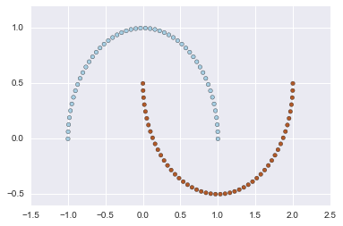

sklern_samples_generator¶
In [6]:
%matplotlib inline
import numpy as np
import pandas as pd
import seaborn as sns
import matplotlib.pyplot as plt
In [3]:
%pwd
Out[3]:
'/Users/knt/programming/python/pandas-tips/sklern_samples_generator'
In [4]:
work_dir = _
work_dir
Out[4]:
'/Users/knt/programming/python/pandas-tips/sklern_samples_generator'
In [105]:
## http://scikit-learn.org/stable/modules/classes.html#module-sklearn.datasets
## Samples generator
from sklearn import datasets
In [34]:
# Generate isotropic Gaussian blobs for clustering.
# datasets.make_blobs([n_samples, n_features, ...])
X, y = datasets.make_blobs(n_samples=100, n_features=2, centers=3, cluster_std=1.0, center_box=(-10.0, 10.0), shuffle=True, random_state=None)
plt.scatter(X[:, 0], X[:, 1], c=y, cmap=plt.cm.Paired)
Out[34]:
<matplotlib.collections.PathCollection at 0x117bb9630>

In [39]:
# Generate a random n-class classification problem.
#datasets.make_classification([n_samples, ...])
X, y = datasets.make_classification(
n_samples=100, n_features=20, n_informative=2, n_redundant=2, n_repeated=0, n_classes=2, n_clusters_per_class=2,
weights=None, flip_y=0.01, class_sep=1.0, hypercube=True, shift=0.0, scale=1.0, shuffle=True, random_state=None)
plt.scatter(X[:, 0], X[:, 1], c=y, cmap=plt.cm.Paired)
Out[39]:
<matplotlib.collections.PathCollection at 0x1180b4e48>

In [42]:
# Make a large circle containing a smaller circle in 2d.
X, y = datasets.make_circles(n_samples=100, shuffle=True, noise=None, random_state=None, factor=0.8)
plt.scatter(X[:, 0], X[:, 1], c=y, cmap=plt.cm.Paired)
Out[42]:
<matplotlib.collections.PathCollection at 0x118305160>

In [98]:
# Generate the “Friedman #1” regression problem
X, y = datasets.make_friedman1(n_samples=100, n_features=10, noise=0.0, random_state=None)
plt.scatter(X[:, 0], X[:, 1], c=y, cmap=plt.cm.Paired)
Out[98]:
<matplotlib.collections.PathCollection at 0x11aa01ba8>

In [50]:
# Generate the “Friedman #2” regression problem
X, y = datasets.make_friedman2(n_samples=100, noise=0.0, random_state=None)
plt.scatter(X[:, 0], X[:, 1], c=y, cmap=plt.cm.Paired)
Out[50]:
<matplotlib.collections.PathCollection at 0x118773320>

In [51]:
# Generate the “Friedman #3” regression problem
X, y = datasets.make_friedman3(n_samples=100, noise=0.0, random_state=None)
plt.scatter(X[:, 0], X[:, 1], c=y, cmap=plt.cm.Paired)
Out[51]:
<matplotlib.collections.PathCollection at 0x1188b0d30>

In [100]:
# Generate isotropic Gaussian and label samples by quantile
X, y = datasets.make_gaussian_quantiles(
mean=None, cov=1.0, n_samples=100, n_features=2, n_classes=3,
shuffle=True, random_state=None)
plt.scatter(X[:, 0], X[:, 1], c=y, cmap=plt.cm.Paired)
Out[100]:
<matplotlib.collections.PathCollection at 0x11ac0cdd8>

In [101]:
# Generates data for binary classification used in Hastie et al.
X, y = datasets.make_hastie_10_2(n_samples=12000, random_state=None)
X, y = datasets.make_hastie_10_2(n_samples=1000, random_state=None)
plt.scatter(X[:, 0], X[:, 1], c=y, cmap=plt.cm.Paired)
Out[101]:
<matplotlib.collections.PathCollection at 0x11af23f60>

In [104]:
# Generate a mostly low rank matrix with bell-shaped singular values
#X, y =
X = datasets.make_low_rank_matrix(n_samples=100, n_features=100, effective_rank=10, tail_strength=0.5, random_state=None)
plt.scatter(X[:, 0], X[:, 1])#, c=y, cmap=plt.cm.Paired)
Out[104]:
<matplotlib.collections.PathCollection at 0x11ab25da0>

In [62]:
# Make two interleaving half circles
X, y = datasets.make_moons(n_samples=100, shuffle=True, noise=None, random_state=None)
plt.scatter(X[:, 0], X[:, 1], c=y, cmap=plt.cm.Paired)
Out[62]:
<matplotlib.collections.PathCollection at 0x119c2f550>

In [66]:
# Generate a random multilabel classification problem.
X, y = datasets.make_multilabel_classification(
n_samples=100, n_features=20, n_classes=5, n_labels=2,
length=50, allow_unlabeled=True, sparse=False,
return_indicator='dense', return_distributions=False, random_state=None)
#plt.scatter(X[:, 0], X[:, 1], c=y, cmap=plt.cm.Paired)
In [68]:
# Generate a random regression problem.
X, y = datasets.make_regression(
n_samples=100, n_features=100, n_informative=10, n_targets=1,
bias=0.0, effective_rank=None, tail_strength=0.5, noise=0.0, shuffle=True, coef=False, random_state=None)
plt.scatter(X[:, 0], X[:, 1], c=y, cmap=plt.cm.Paired)
Out[68]:
<matplotlib.collections.PathCollection at 0x119e7dd68>

In [72]:
# Generate an S curve dataset.
X, y = datasets.make_s_curve(n_samples=100, noise=0.0, random_state=None)
plt.scatter(X[:, 0], X[:, 1], c=y, cmap=plt.cm.Paired)
Out[72]:
<matplotlib.collections.PathCollection at 0x11a292dd8>

In [76]:
# Generate a signal as a sparse combination of dictionary elements.
#X, y =
X = datasets.make_sparse_coded_signal(
n_samples=1000, n_components=10, n_features=10, n_nonzero_coefs=10, random_state=None)
plt.scatter(X[:, 0], X[:, 1])#, c=y, cmap=plt.cm.Paired)
---------------------------------------------------------------------------
TypeError Traceback (most recent call last)
<ipython-input-76-2e1ea4b30e67> in <module>()
3 X = datasets.make_sparse_coded_signal(
4 n_samples=1000, n_components=10, n_features=10, n_nonzero_coefs=10, random_state=None)
----> 5 plt.scatter(X[:, 0], X[:, 1])#, c=y, cmap=plt.cm.Paired)
TypeError: 'map' object is not subscriptable
In [79]:
# Generate a sparse symmetric definite positive matrix.
#X, y =
X = datasets.make_sparse_spd_matrix(dim=1, alpha=0.95, norm_diag=False, smallest_coef=0.1, largest_coef=0.9, random_state=None)
plt.scatter(X[:, 0], X[:, 1])#, c=y, cmap=plt.cm.Paired)
---------------------------------------------------------------------------
IndexError Traceback (most recent call last)
<ipython-input-79-c3d73a13f775> in <module>()
2 #X, y =
3 X = datasets.make_sparse_spd_matrix(dim=1, alpha=0.95, norm_diag=False, smallest_coef=0.1, largest_coef=0.9, random_state=None)
----> 4 plt.scatter(X[:, 0], X[:, 1])#, c=y, cmap=plt.cm.Paired)
IndexError: index 1 is out of bounds for axis 1 with size 1
In [81]:
# Generate a random regression problem with sparse uncorrelated design
X, y = datasets.make_sparse_uncorrelated(n_samples=100, n_features=10, random_state=None)
plt.scatter(X[:, 0], X[:, 1], c=y, cmap=plt.cm.Paired)
Out[81]:
<matplotlib.collections.PathCollection at 0x11a3a6f98>

In [86]:
# Generate a random symmetric, positive-definite matrix.
X, y = datasets.make_spd_matrix(n_dim=10, random_state=None)
X, y
#plt.scatter(X[:, 0], X[:, 1], c=y, cmap=plt.cm.Paired)
---------------------------------------------------------------------------
ValueError Traceback (most recent call last)
<ipython-input-86-2bbe315c5d46> in <module>()
1 # Generate a random symmetric, positive-definite matrix.
----> 2 X, y = datasets.make_spd_matrix(n_dim=10, random_state=None)
3 X, y
4 #plt.scatter(X[:, 0], X[:, 1], c=y, cmap=plt.cm.Paired)
ValueError: too many values to unpack (expected 2)
In [88]:
# Generate a swiss roll dataset.
X, y = datasets.make_swiss_roll(n_samples=100, noise=0.0, random_state=None)
plt.scatter(X[:, 0], X[:, 1], c=y, cmap=plt.cm.Paired)
Out[88]:
<matplotlib.collections.PathCollection at 0x119d17128>

In [90]:
# Generate an array with constant block diagonal structure for biclustering.
X, y = datasets.make_biclusters(shape, n_clusters=3, noise=0.0, minval=10, maxval=100, shuffle=True, random_state=None)
plt.scatter(X[:, 0], X[:, 1], c=y, cmap=plt.cm.Paired)
---------------------------------------------------------------------------
NameError Traceback (most recent call last)
<ipython-input-90-7bcb6c5abc44> in <module>()
1 # Generate an array with constant block diagonal structure for biclustering.
----> 2 X, y = datasets.make_biclusters(shape, n_clusters, noise=0.0, minval=10, maxval=100, shuffle=True, random_state=None)
3 plt.scatter(X[:, 0], X[:, 1], c=y, cmap=plt.cm.Paired)
NameError: name 'shape' is not defined
In [93]:
# Generate an array with block checkerboard structure for biclustering.
X, y = datasets.make_checkerboard(shape, n_clusters=3, noise=0.0, minval=10, maxval=100, shuffle=True, random_state=None)
plt.scatter(X[:, 0], X[:, 1], c=y, cmap=plt.cm.Paired)
---------------------------------------------------------------------------
NameError Traceback (most recent call last)
<ipython-input-93-752a2dab38ed> in <module>()
1 # Generate an array with block checkerboard structure for biclustering.
----> 2 X, y = datasets.make_checkerboard(shape, n_clusters, noise=0.0, minval=10, maxval=100, shuffle=True, random_state=None)
3 plt.scatter(X[:, 0], X[:, 1], c=y, cmap=plt.cm.Paired)
NameError: name 'shape' is not defined